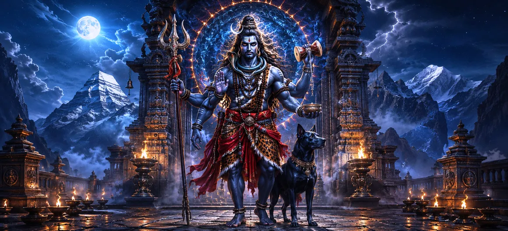

The Bhairava Incarnation
The eighth chapter of the Shatarudra Samhita presents the powerful manifestation of Lord Shiva as Bhairava. This fierce divine form appears in a moment when pride, confusion, and the misuse of divine authority disturb the proper understanding of supreme reality.
The narrative centers upon Brahma's arrogance and his claim of supreme status. Against this background, Bhairava emerges as the uncompromising power of Shiva that restores the distinction between divine truth and personal pride.
The chapter also establishes Bhairava as a manifestation of extraordinary spiritual authority. His fierce appearance is not merely destructive; it represents the force that removes arrogance, protects cosmic order, and directs consciousness back toward the Supreme.
Chapter 8 Highlights
Bhairava Manifestation
Presents the fierce manifestation of Lord Shiva as Bhairava.
Brahma's Pride
Explores Brahma's claim of supreme authority and the spiritual danger of pride.
Divine Correction
Shows how Shiva's power restores proper divine order when pride obscures truth.
The Fifth Head of Brahma
Describes Kala-Bhairava cutting one of Brahma's five heads with his left-hand fingernail.
Kala-Bhairava
Reveals Bhairava's association with time, fearlessness, justice, and supreme authority.
Protection of Dharma
Emphasizes the protective role of Shiva's fierce manifestation in preserving spiritual order.
Core Topics in This Chapter
- 01 The Divine Background of Bhairava's Manifestation →
- 02 Brahma's Arrogance and Claim of Supremacy →
- 03 The Appearance of Lord Bhairava →
- 04 The Confrontation with Brahma →
- 05 The Cutting of Brahma's Fifth Head →
- 06 The Meaning and Power of Bhairava →
- 07 Kala-Bhairava and the Power of Time →
- 08 Bhairava as Protector and Divine Justice →
- 09 Devotional Significance of Bhairava →
- 10 Transition to the Sports of Bhairava →
The Divine Background of Bhairava's Manifestation
The Bhairava narrative arises within the wider revelation of Shiva's countless incarnations. The Shatarudra Samhita presents these manifestations as expressions of the Supreme Lord appearing for the welfare of beings and the preservation of divine order.
Bhairava represents one of the most formidable expressions of this divine authority. His appearance is associated with the removal of pride and the restoration of proper recognition of the Supreme.
The chapter therefore begins not merely as a tale of conflict, but as a spiritual teaching about the consequences of forgetting the true source of divine power.
Brahma's Arrogance and Claim of Supremacy
In the narrative, Brahma becomes influenced by pride and speaks to Rudra as though he himself were the ultimate authority. His words reflect a mistaken identification of the individual divine office with the Supreme Reality itself.
Brahma even reminds Rudra that the name Rudra had once been associated with the sound of crying and invites him to seek protection from Brahma. This statement becomes an expression of the pride that the Bhairava manifestation is destined to correct.
The episode teaches that even a position of extraordinary cosmic responsibility cannot become a reason for forgetting the Supreme Lord.
The Appearance of Lord Bhairava
In response to the disturbance created by Brahma's pride, the fierce power of Shiva appears as Bhairava. This manifestation carries the authority necessary to confront arrogance without hesitation.
Bhairava is not separate from Shiva. He is a complete and powerful manifestation of the same Supreme Lord, appearing in a form appropriate to the work that must be accomplished.
His terrifying appearance symbolizes the uncompromising nature of divine truth. What appears frightening to the ego becomes liberating to the sincere seeker because it destroys false identification and pride.
The Confrontation with Brahma
The appearance of Bhairava brings Brahma's claim of supremacy into direct confrontation with the authority of Shiva. The episode illustrates that divine offices and cosmic functions ultimately operate under the sovereignty of the Supreme Lord.
Brahma's words reveal how easily authority can become mixed with ego. Bhairava's presence exposes that confusion and restores the proper spiritual hierarchy.
The confrontation therefore carries a deeper lesson: spiritual power must always remain rooted in humility and recognition of its divine source.
The Cutting of Brahma's Fifth Head
Having received the necessary divine authority, Kala-Bhairava performs the decisive act described in the chapter. With the front of the nail of a finger of his left hand, he cuts one of Brahma's five heads.
The act is presented as a divine correction of arrogance rather than an ordinary act of violence. Bhairava's power demonstrates that even exalted beings remain accountable to the Supreme order.
The fifth head thus becomes a powerful symbol of the removal of excessive pride and the restoration of spiritual clarity.
The Meaning and Power of Bhairava
The name Bhairava is associated with a formidable and fear-dissolving aspect of Shiva. His terrifying form represents a power before which destructive forces, arrogance, and the limitations of worldly authority cannot stand.
Bhairava's fierceness should therefore not be understood merely as anger. It is the concentrated power of divine truth acting when correction becomes necessary.
For devotees, Bhairava becomes a reminder that spiritual strength includes the courage to confront one's own pride, fear, attachment, and false sense of importance.
Kala-Bhairava and the Power of Time
The chapter's Bhairava manifestation is closely connected with the name Kala-Bhairava. This title emphasizes the relationship between Bhairava and Kala, the power of time.
Time consumes everything within the created world, but the divine reality represented by Bhairava stands beyond the ordinary fear of time. This makes Kala-Bhairava a profound symbol of spiritual fearlessness.
The tradition also connects Bhairava with supreme authority and the power to protect devotees. His presence reminds seekers that divine justice ultimately prevails over pride and disorder.
Bhairava as Protector and Divine Justice
The fierce aspect of Bhairava has a protective dimension. His power is directed against forces that disturb dharma, spiritual order, and the sincere path of devotion.
Divine justice in the Bhairava tradition is not limited by social status or worldly authority. Pride cannot protect anyone from the consequences of forgetting the Supreme.
At the same time, the protective dimension of Bhairava gives devotees confidence that sincere refuge in Shiva is never without spiritual meaning.
Devotional Significance of Bhairava
Devotion to Bhairava is traditionally associated with courage, discipline, protection, and the removal of fear. The devotee approaches this fierce form not with ordinary fear, but with reverence for the power of Shiva.
The spiritual value of Bhairava worship also lies in self-examination. A seeker can ask which forms of pride, fear, anger, or attachment continue to obscure the recognition of the divine within.
In this sense, Bhairava becomes both a guardian and a spiritual teacher, revealing that fearlessness begins when the ego is surrendered before the Supreme.
Transition to the Sports of Bhairava
Chapter 8 establishes the powerful identity and purpose of Bhairava. The manifestation has demonstrated Shiva's authority and the consequences of arrogance before the Supreme.
The narrative then moves toward the divine activities and further manifestations associated with Bhairava. These events continue to reveal his relationship with devotees, sacred places, divine powers, and the protection of spiritual order.
Chapter 9 therefore continues naturally from this foundation by presenting The Sports of Bhairava.
Key Teachings of Chapter 8
Humility Before the Supreme
Cosmic authority must never become a reason for forgetting the Supreme source of all power.
Destruction of Pride
Bhairava represents the force that removes excessive pride and restores spiritual clarity.
Beyond Fear of Time
Kala-Bhairava reminds seekers that divine consciousness transcends ordinary fear of time.
Divine Protection
The fierce form of Shiva also serves as a guardian of dharma and sincere devotion.
Self-Examination
Bhairava encourages seekers to confront their own pride, fear, and attachments.
Supreme Authority
All divine functions ultimately remain within the sovereignty of the Supreme Lord.
Spiritual Reflection
Chapter 8 presents Bhairava as the fierce clarity of Shiva. The story of Brahma's pride reminds us that knowledge, authority, and accomplishment can become obstacles when they are separated from humility. Bhairava's intervention is therefore deeply symbolic: what is false must be cut away so that truth can again be recognized. The fifth head of Brahma may be contemplated as an image of excessive self-importance, while Bhairava represents the uncompromising wisdom that removes it. Kala-Bhairava further teaches fearlessness before time and change. When a devotee approaches Bhairava sincerely, the fierce form of Shiva can be understood not as a source of terror but as a guardian who protects the path of spiritual truth.
Living the Message of Chapter 8
Applying the message of Bhairava in daily life begins with observing one's own pride. Whenever success, knowledge, position, or influence creates a sense of superiority, remember the lesson of Brahma and return to humility.
When facing fear, especially fear of change, loss, or uncertainty, contemplate the symbolism of Kala-Bhairava. Time changes all external conditions, but spiritual awareness can remain rooted in the Supreme.
Bhairava also teaches disciplined courage. Rather than running from difficult truths, face them honestly, remove harmful habits, and allow spiritual clarity to replace fear and confusion.
Key Spiritual Concepts
A fierce and powerful manifestation of Lord Shiva associated with protection, fearlessness, and divine correction.
The form of Bhairava associated with Kala, the power of time, and supreme authority.
The creator deity whose pride becomes central to the lesson of this chapter.
The supreme spiritual sovereignty under which all cosmic functions ultimately operate.
The danger of allowing knowledge, position, or power to obscure humility before the Supreme.
The inner courage that arises when consciousness rests in the divine rather than in ego.
Chapter Summary
Shatarudra Samhita Chapter 8 presents the powerful Bhairava Incarnation of Lord Shiva. The narrative centers on Brahma's pride and his claim of supreme authority. In response to this arrogance, the fierce manifestation of Shiva appears as Kala-Bhairava. After receiving the necessary divine authority, Bhairava cuts one of Brahma's five heads with the nail of a finger of his left hand. The episode symbolizes the removal of excessive pride and the restoration of recognition of the Supreme Lord. Bhairava's association with Kala emphasizes his relationship with time, fearlessness, divine justice, and supreme authority. For devotees, the chapter offers a profound teaching about humility, courage, self-examination, protection, and the need to surrender ego before divine truth. The chapter concludes by preparing the narrative for Chapter 9, The Sports of Bhairava.
Frequently Asked Questions
① What is the main subject of Shatarudra Samhita Chapter 8?
The chapter describes the manifestation of Lord Bhairava and his confrontation with Brahma's pride and claim of supreme authority.
② Why did Lord Bhairava manifest?
Bhairava manifested as a fierce expression of Shiva's authority to correct arrogance and restore proper recognition of the Supreme.
③ What did Kala-Bhairava do to Brahma?
Kala-Bhairava cut one of Brahma's five heads using the front of the nail of a finger of his left hand.
④ What does Bhairava symbolize spiritually?
Bhairava symbolizes fearless divine authority, the destruction of pride, protection of dharma, and the power to confront spiritual obstacles.
⑤ Why is Bhairava associated with Kala?
The name Kala-Bhairava emphasizes Bhairava's relationship with Kala, the power of time, and expresses the transcendence of ordinary fear before time.
⑥ How does Chapter 8 connect to Chapter 9?
Chapter 8 establishes the manifestation and authority of Bhairava, while Chapter 9 continues with The Sports of Bhairava and his further divine activities.
“When pride veils the truth, the fierce grace of Shiva appears to cut away illusion and restore the soul to divine awareness.”
Continue Through Shatarudra Samhita
Chapter 8 presents the powerful manifestation of Lord Bhairava and the divine correction of Brahma's pride. Continue into Chapter 9 to explore The Sports of Bhairava and the further divine activities associated with this fierce manifestation of Lord Shiva.